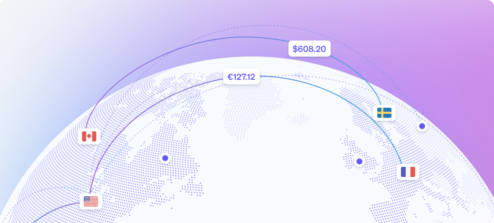

Managed Payments
Sell globally without the complexity
Focus on growth while Managed Payments handles tax, fraud, disputes, and more as your merchant of record.
Takes on tax responsibility
Stripe registers, charges the right amount, and files—in 80+ countries.
Stripe registers, charges the right amount, and files—in 80+ countries.
Reduces declined payments
Stripe collects the payment as a local business, so more of your sales go through.
Stripe collects the payment as a local business, so more of your sales go through.
Manages disputes and fraud
Stripe responds to disputes for you and screens every payment for fraud.
Stripe responds to disputes for you and screens every payment for fraud.

Search
Location
Status
Payment volume
Tax liability covered
No locations covered yet
Stripe covers sales where Managed Payments is on. Set it up to see the locations you sell in and turn on the ones you want covered.